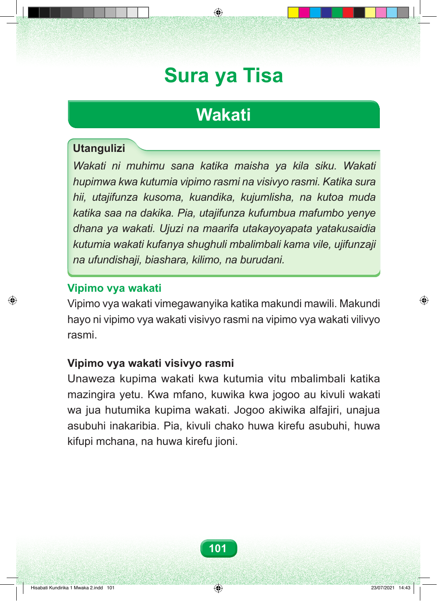

Sura ya Tisa Wakati Utangulizi Wakati ni muhimu sana katika maisha ya kila siku. Wakati hupimwa kwa kutumia vipimo rasmi na visivyo rasmi. Katika sura hii, utajifunza kusoma, kuandika, kujumlisha, na kutoa muda katika saa na dakika. Pia, utajifunza kufumbua mafumbo yenye dhana ya wakati. Ujuzi na maarifa utakayoyapata yatakusaidia kutumia wakati kufanya shughuli mbalimbali kama vile, ujifunzaji na ufundishaji, biashara, kilimo, na burudani. Vipimo vya wakati Vipimo vya wakati vimegawanyika katika makundi mawili. Makundi hayo ni vipimo vya wakati visivyo rasmi na vipimo vya wakati vilivyo rasmi. Vipimo vya wakati visivyo rasmi Unaweza kupima wakati kwa kutumia vitu mbalimbali katika mazingira yetu. Kwa mfano, kuwika kwa jogoo au kivuli wakati wa jua hutumika kupima wakati. Jogoo akiwika alfajiri, unajua asubuhi inakaribia. Pia, kivuli chako huwa kirefu asubuhi, huwa kifupi mchana, na huwa kirefu jioni. 101 Hisabati Kundirika 1 Mwaka 2.indd 101 23/07/2021 14:43